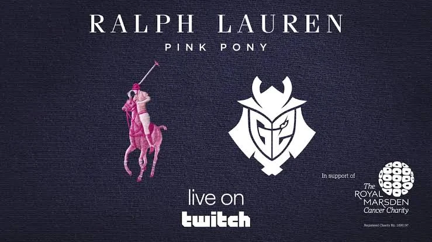
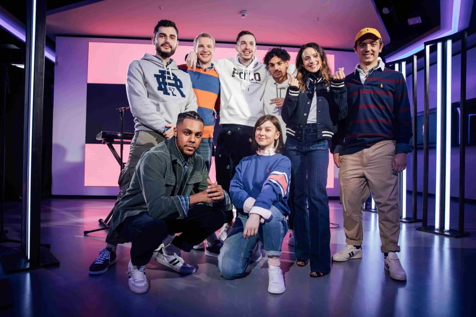

Overview
The first Pink Pony Streamathon: a three-hour live charity event from Berlin with G2 Esports and Ralph Lauren, supporting young people with cancer at The Royal Marsden.
The challenge
A new addition to Ralph Lauren's long-running Pink Pony campaign, so there was no previous event to build on. It needed a live audience big enough to matter and a tone that respected the cause while still feeling like a G2 stream.
My role
As Social Media Manager at G2 Esports, I managed both the social campaign and the broadcast operations: the promotional rollout and line-up announcements, run-of-show and live production coordination on the night, real-time community management, and post-event highlights and reporting to the partner.
Strategic approach
A cause-led live event, run like a flagship broadcast:
- Build anticipationAnnounce players, hosts and music in the run-up, like any G2 event.
- Make the stream the contentPlayer challenges, live music and hosts in one three-hour show.
- Keep the cause visibleDonations open throughout the evening, with the purpose front and centre.
- Extend the momentHighlights content after the event to thank the community and the partner.

Creative idea
A streamathon: G2 players competing in challenges live from LVL World of Gaming in Berlin, with live music, hosts and donations, on 27 October 2021.
What I delivered
- Social promotion campaign and line-up announcements
- Broadcast operations for the three-hour live show on Twitch
- Highlights content after the event

Results
552K
Live unique viewers
£5,971.44
Raised with the #G2ARMY
10K
Engagements
Funds support roles at The Royal Marsden's Oak Centre for Children and Young People, including play specialists, psychologists and complementary therapists.